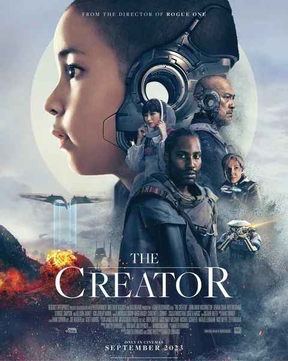

Фильм · 2023 · ИИ, Фантастика
Постапокалиптическое будущее: после ядерного взрыва в Лос-Анджелесе Запад объявляет войну искусственному интеллекту. Бывший спецагент, потерявший жену, проникает на территорию машин, чтобы найти создателя их нового оружия, — и встречает ребенка, неотличимого от человека, которого машины создали для себя. Визуально впечатляющая научно-фантастическая лента о страхе перед ИИ, пропаганде и вопросе о том, кто на самом деле породил это «чудовище».
A post-apocalyptic future: after a nuclear blast in Los Angeles the West declares war on artificial intelligence. An ex-agent who lost his wife infiltrates the machines' territory to find the designer of their new weapon — and meets a child, indistinguishable from a human, that the machines built for themselves. Visually lush sci-fi about the fear of AI, propaganda and the question of who really created the 'monster'.